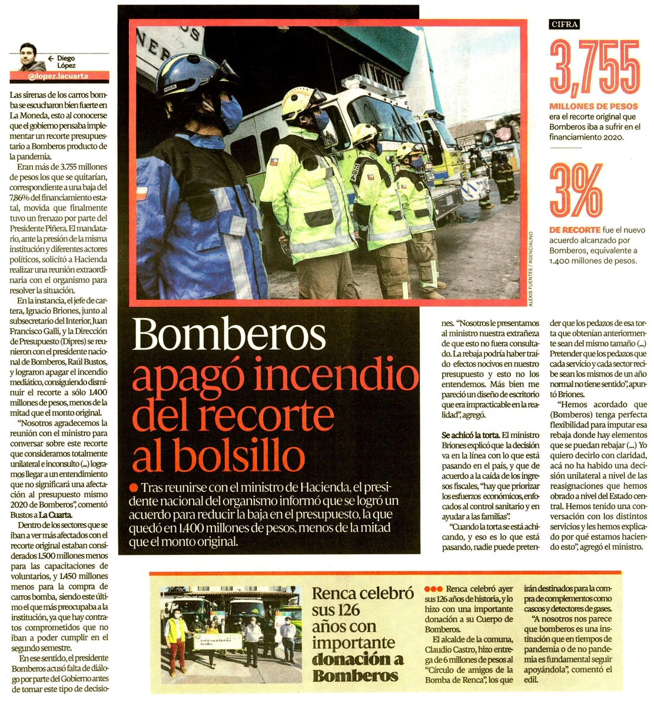

Apoyo directo a bomberos en zonas de alto riesgo
Bomberos Sin Fronteras llevó a cabo una importante entrega de equipos de protección a diferentes compañías de bomberos voluntarios en Talca, con el objetivo de mejorar su seguridad y capacidad de respuesta ante emergencias.

Entre los equipos entregados se encuentran cascos de alta resistencia, guantes ignífugos, botas especiales y herramientas de rescate. Estos implementos son fundamentales para enfrentar incendios estructurales y forestales en condiciones extremas.
Equipamiento que salva vidas
Muchos bomberos voluntarios operan con recursos limitados, lo que incrementa el riesgo durante las intervenciones. Gracias a estas donaciones, ahora cuentan con herramientas adecuadas que les permiten actuar con mayor seguridad y eficiencia.
"Estos equipos representan una gran diferencia para nosotros. Nos permiten trabajar con mayor protección y responder mejor ante situaciones críticas."

Impacto en la comunidad
Esta iniciativa no solo beneficia a los bomberos, sino también a toda la comunidad, ya que mejora la capacidad de respuesta ante incendios y emergencias, reduciendo riesgos y protegiendo vidas.
Bomberos Sin Fronteras continúa trabajando para llevar este tipo de apoyo a más regiones, fortaleciendo a quienes están en la primera línea de respuesta.